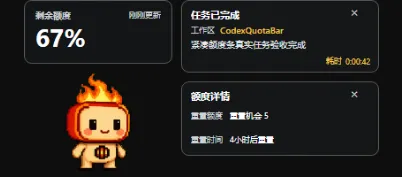

PROMINENT QUOTA
67%额度与进度条
主额度用醒目的百分比和横向进度条呈现，扫一眼就知道当前余量。
CODEX QUOTA BAR / DESKTOP TOOL
桌宠身边的紧凑用量视图：把主额度、低额度提示与任务完成状态收进一个始终置顶的小窗口，工作时一眼就能读完。

运行中的紧凑桌宠融合视图
WHAT STAYS VISIBLE
PROMINENT QUOTA
67%主额度用醒目的百分比和横向进度条呈现，扫一眼就知道当前余量。
PET MODE
检测到可用桌宠时，额度视图可贴靠在身边；点击桌宠即可展开完整信息。
TASK STATUS
完成卡片在任务结束时短暂出现，让进度提醒不再打断当前工作。
DESKTOP FLOW
支持随系统启动，并通过托盘控制显示与隐藏，让桌面保持轻量。
LOCAL FIRST
用量信息仅在本机工具内处理，不读取或上传 auth.json。
TWO PLATFORMS
提供两种桌面系统的安装包，按当前设备选择下载即可。
DESKTOP DOWNLOADS